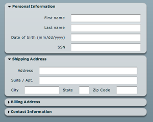
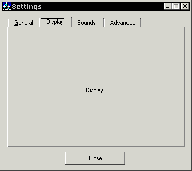

COLLAPSABLE WINDOWS:
This is one thing the Inspector really need.
Here an example from the web:

When we add a component to a node, the parameter window should be collapsed, and when we want to edit we click on the triangle (other standard behavior is to double click on the title), that will “open” the window full size to change the parameters.
I think it would be possible to add this directly in the editor in .AS (Angelscript), as it could be a button that set the size of the window. But would be time consuming (Not totally sure). If it was a window (option or variant) directly from the engine would be instanced directly with this ability and with no coding. (Min size would be collapsed, and max size would be expanded)
TABBED WINDOWS:
I think it’s the perfect tool to isolate/show specific icons/element of an interface depending of the work we do.

This could be used in the EDITOR to define SUB-MODES of editing: (Here is some examples I’m thinking of)
1- Terrain editor with only the icons tools used in the terrain editing
2- Material Editor, have sections of stuff of shader types, shaders, and post-fx, etc.
3- Particle editing.
4- Cutscene editing, would reveal a timeline and spline controls
5- Could be used to edit multiple scenes as ATOMIC EDITOR is doing…
[size=150]Editor design suggestions[/size]:
[ul][li]Can the inspector window could be “docked” on the right and not moving? With the current font size of the input text, we have also to expand the window a little as we can’t read the data correctly. (Expand the window a little or reduce a little the font size)[/li]
[li]Is there a way to have the background of the editor not being full black while editing? (Only aesthetic, but I think would make the editor look better)
Here is some example from other software their background is grey while they edit:[/li][/ul]
Unity 3D:

Blender:
Maya:


 Perhaps, it is because I have made a promise myself not to touch the UI subystem anymore as I have spent too much time on it and there are plenty more other things to learn from Lasse and his engine. If anyone interested in picking this up, I would recommend to study the ListView class closely.
Perhaps, it is because I have made a promise myself not to touch the UI subystem anymore as I have spent too much time on it and there are plenty more other things to learn from Lasse and his engine. If anyone interested in picking this up, I would recommend to study the ListView class closely.{kind=link}